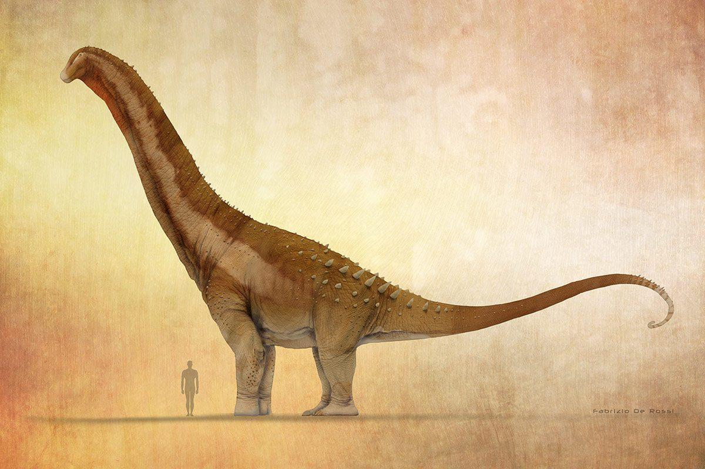

9/22/2025
The Beginning
I remember it being a warmer day in April. My partner, who can only be described as delightfully eccentric, took me to go shopping, mostly to take advantage of the heavily discounted Easter candies left behind. This has become a ritual of sorts for us. Every major holiday (barring Christmas), we go and reap the leftover treats, decorations, and general goodies that stores have to sell. I remember the same week, we purchased a shopping cart from a closing holiday department store. The next weekend we went and bought a clothes mannequin. I was struggling emotionally at the time; still sort of healing from events that took place the year prior to put it gently. I was lollygagging around the store, idly waiting for my partner to choose his allotment of the remainder of the candy when something caught my eye. An incredibly dull, warm brown Tyrannosaurus Rex plushie. Now the irony is not lost on me; usually stories start with some air of whimsy, or a spark of creativity, or a stroke of luck. And with a subject that’s usually sensationalized, you’d think that maybe the explanation behind all of this is something grander. With its rather uninspired look, it almost stood out like a sore thumb. Its fabric is this soft, felt-like, smooth texture– without its body it could easily be mistaken for a horse who happened to forget its ears, or maybe more appropriately a mule.
As soon as I picked it up my partner came over and began asking me about it. To this day I can’t really say what piqued my interest about it, or why I begged him to get it for me, but it had to have meant something.
Maybe a month or two passed, and my partner and I decided to go to an arts and crafts store on a whim. There I found a virtually identical plushie; to an untrained eye, they’d maybe be reminiscent of each other. But the patterning, the stitching of the eyes, the colorscheme– all undeniably linked to each other. There were only minimal differences, like the addition of stitched teeth on the new one, and the absence of claws on the one from the pharmacy. Clearly one had ripped off the other, but there are many different possibilities of who copied who. No matter the truth, the outcome was the same; I was completely and utterly in love.
I’d wanted to build a terrarium for a long time, but I never felt like I knew enough or was good enough with raw materials to build it properly. However, I quickly realized that maybe I never had a reason to do it. There were many reasons this time around; great timing, a rising tension in politics, my rights and others like me were consistently attacked (of which, if you don’t believe me, I’ll refer to this same situation in other essays), I was taking a break from larger projects, and I really needed an out. I dove into terrarium building information. You’d be surprised how little terrariums are “mueseum-esq”, as in, they really are just meant to be decoration. I feel like terrariums could be a brilliant way to display information, if not great environmental studies themselves. For a lack of better terminology, it seems like a strangely untapped artform that meshes well with science. This was kind of when my project took a turn.
I was curious about the prospect of putting models in my terrarium, so I began looking for scientifically-accurate models online. I looked for quite a few hours, only really finding accurate skeletons and Jurassic Park monstrosities, and another thing I didn’t expect. Artificially generated models of dinosaurs, for a price, with the tagline “accurate”. And there wasn’t just one either. There were large numbers of various different dinosaur models, more often skeletal, all with issues regarding anatomy and bone structure. 3D generative models aren’t new, in fact, people have been trying to “accelerate” artforms for a while now, but having them generated from scratch is certainly a choice. As a hobbyist 3D modeler/poser, I know enough 3D modeling information to know that these models are 100% unusable, mainly because of these models’ wrapping and polygonial patterning. For those unfamiliar, most 3D models are an art blend; they combine a shape with a texture overlaid onto it (a general amount of the time). Good 3D models are a balancing act, balancing the amount of faces for the amount of detail they have. One of my favorite examples of a bad 3D model versus a good one is the infamous Garten of Banban main antagonist, and the monster Bendy from Bendy and the Ink machine. I encourage you to try and guess which model has one million polygons and is difficult to work with.

(Hint: you should not be able to see lighting with your topology)
(Hint: you should not be able to see lighting with your topology)
The example on the left is essentially what generated models do, which in any other circumstance does make sense to a computer. The same line of thinking can be applied to generative art as well, as there are always technological issues with using generative art as a tool as well. But, along with the $5.00 USD price tag, I’ll keep looking. And did I look.
I looked pretty much everywhere you could for a 3D model. My last hope was that someone uploaded one recently and it hadn’t been seen yet. I think one of my main pet peeves when it comes to the “pros” of LLCs and other generative programs is that you don’t have to interact or find a person for the thing you need. However, I’d like to argue that when you do find that person, it’s like an angel appears right in front of your eyes and locks the pieces in place. An artist only known as “DragonArtist15” publishes almost exclusively scientifically accurate models of dinosaurs, all for free, all for personal use. So, over the course of this project, not only am I dedicated to speaking about topics that may help others feel a little knowledgeable about the world, I also want to talk to other artists along the way, starting with one of the designs for my dinosaurs.